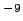
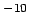

La forma de interpretar estas variables ( ) dentro del concepto
de probabilidad de contaminación se realiza mediante una
clasificación de la variable (
) dentro del concepto
de probabilidad de contaminación se realiza mediante una
clasificación de la variable ( ) y una importancia o
ponderación (). La clasificación de la variable
dependerá del estado o condición de ésta en el punto de vertido y
la ponderación del concepto de elemento estructural del
punto de vertido; con este término
se considera a los elementos que intervienen directamente en la
afección de los parámetros y que han sido:
) y una importancia o
ponderación (). La clasificación de la variable
dependerá del estado o condición de ésta en el punto de vertido y
la ponderación del concepto de elemento estructural del
punto de vertido; con este término
se considera a los elementos que intervienen directamente en la
afección de los parámetros y que han sido:
Estos tres conceptos participan en los principales procesos bioquímicos y físicos que se producen en el punto de vertido, dando lugar a la producción de gases y lixiviados, por lo que afectan a todos los parámetros y son por tanto los que van a proporcionar mayor ponderación de las diferentes variables de vertedero. Todas las variables utilizadas para la medición de la probabilidad de afección que estén directamente relacionadas con estos elementos estructurales tendrán una ponderación máxima; también ponderarán de forma máxima aquellas variables que aún no estando directamente relacionadas con los elementos estructurales sean causa directa de riesgo de afección sobre el parámetro considerado.
La ponderación de la variable es de valor unitario cuando la variable no está relacionada con ningún elemento estructural, ni afecta directamente al elemento del medio evaluado; en este caso, la clasificación de la variable puede adquirir los valores recogidos en la tabla 2.4.
Si la variable está relacionada con algún elemento estructural o directamente con el elemento del medio la ponderación adquiere el valor de dos. En este caso la clasificación de la variable puede adquirir los valores indicados en la tabla 2.5.
Teniendo en cuenta los conceptos indicados se definirá Índice de Riesgo de Contaminación (IRC)2.10 para cada variable j a la expresión recogida en 2.14.
A continuación, se justificará la ponderación y clasificación para las variables elegidas en la valoración de la probabilidad de contaminación de cada elemento del medio.
Para establecer la clasificación de la variable asentamiento de la masa de residuos se observarán las siguientes situaciones:
Se considerará el asentamiento muy alto(C=5) cuando se cumplan las situaciones indicadas en la lista anterior; alto(C=4) si se observa la situación e. y alguna de las otras (a, b, c o d); medio (C=3) si se observa la situación e, y dos de las otras situaciones (a, b, c o d); bajo (C=2) si se observa la situación e, y tres de las otras situaciones (a, b, c o d) y muy bajo (C=1) si se observan las cinco situaciones.
Esta variable posee ponderación máxima 2 para el elemento del medio suelo, por afectarlo directamente, mientras que en el resto de los elementos del medio la ponderación tiene valor mínimo 1.
Para clasificar esta variable se va a considerar el método GOD que establece la vulnerabilidad del acuífero como una función de: la profundidad de la capa freático o techo del acuífero confinado, el tipo de ocurrencia del agua subterránea y las características, en términos de litología y grado de consolidación, de los estratos encima de la zona saturada.
A partir de estos factores se calcula el Índice de Vulnerabilidad (I.V), calculado como el producto de los tres parámetros identificados, que se recoge en la expresión 2.15, donde donde G es el índice por condición de confinamiento del acuífero u ocurrencia del agua subterránea (Groundwater occurrence) y se calcula a partir de la tabla 2.6; O es el índice del substrato litológico en términos de grado de consolidación y características litológicas (Overall aquifer class), y se determina a partir de la tabla 2.7; D es el índice de profundidad del nivel del agua o techo del acuífero confinado (Depth), y se de determina a partir de la tabla 2.8.
A la hora de clasificar la variable se considerará GOD muy alta (C=5) si el I.V es menor de 0.7; clasificación GOD alta (C=4) si I.V se encuentra entre 0.5 y 0.7; clasificación GOD media (C=3), si I.V oscila entre 0.3 y 0.5; clasificación GOD baja (C=2) cuando I.V toma valores entre 0.1 y 0.3; finalmente la clasificación GOD será muy baja (C=1) si el I.V es menor de 0.1.
Esta variable posee ponderación máxima 2 para el elemento del medio aguas subterráneas, por afectarlo directamente.
Para conseguir las propiedades deseadas de cobertura se pueden aplicar varios tipos de materiales de cobertura y técnicas. El RD 1481/2001 no establece criterios sobre la cobertura final pero si el Decreto 1/97 de Cataluña, que establece la siguiente organización de la cubrición del residuo:
Teniendo en cuenta estos criterios, se considerará que una cobertura final es muy adecuada (C=1) cuando se cumplen todos los requisitos establecidos en el Decreto 1/97; adecuada (C=2), si se cumplen todas excepto la existencia de capa drenante de gases; media (C=3), si se cumplen obligatoriamente la característica de capa mineral impermeable (capa arcillosa k 10 m/s) y con espesor mínimo de 90 cm. pero dos de los requisitos establecidos no se cumplen; deficiente (C=4), si se cumple obligatoriamente la característica de capa mineral impermeable pero no se cumplen tres de los requisitos y muy deficiente (C=5), cuando no se cumplen cuatro o más de los requisitos establecidos.
La ponderación de esta variable obtendrá valor máximo 2 para todos los elementos del medio por estar directamente relacionada con el elemento estructural humedad.
En la clasificación de esta variable se van a considerar cuatro tipo de vertederos, en función de la densidad que se alcanza en su explotación: los de baja densidad (500 kg/m), media densidad (500-800 kg/m), alta densidad (800 kg/m) y de balas.
Por otro lado se considerará que la explotación que se lleva a cabo es adecuada, desde el punto de vista de la compactación si:
A efectos de la clasificación de la variable, a compactación es muy alta (C=1) si el vertedero es de balas y se realiza una explotación buena.
La compactación será alta (C=2)si:
La compactación será media (C=3) si se da alguna de las siguientes circunstancias:
La compactación será baja (C=4) si:
La compactación será nula (C=5) si:
La ponderación de esta variable obtendrá valor máximo 2 para todos los elementos del medio por estar directamente relacionada con el elemento estructural densidad.
Se establece la siguiente clasificación de la variable. Se considerará que el control de gases es muy adecuado (C=1) si el vertedero posee y está en buen estado al menos uno de los controles pasivos y uno de los controles activos descritos en el capítulo 6; además los gases se tratarán y se aprovecharán para energía, y si no puede aprovecharse se quemará antes de su salida al exterior; la frecuencia de medición y control es la siguiente: emisiones potenciales de gas y presión atmosférica CH, CO, O, HS, H, etc mensualmente. Se considerará adecuado (C=2) si se cumplen las indicaciones del caso anterior, excepto que no existe tratamiento de los gases ni recuperación de energía ni quemadores. El control de gases se considerará regular (C=3) si los controles activos y pasivos existen pero no están en buen estado ó bien no existe medición en la frecuencia que establece el punto muy adecuado. Será bajo (C=4) si existe déficit en la recogida y en la frecuencia de medición de gases, pudiendo existir o no aprovechamiento de energía y finalmente nulo (C=5) no existen controles de gases. No hay aprovechamiento ni tampoco mediciones.
En el caso del elemento del medio atmósfera, la ponderación de esta variable será máxima ya que tiene relación directa con dicho elemento del medio. En los elementos del medio suelo y salud alcanza valor mínimo por no tener relación directa con los mismos.
La variable control de lixiviados se va a estudiar en los cuatro aspectos indicados de los se deriva la siguiente clasificación. Se considerará que el control de lixiviados es muy adecuado (C=1) cuando existe control del volumen mensual y de la composición trimestral del lixiviado, los sistemas de drenaje están en buen estado y diseñados de acuerdo a lo exigido en la normativa vigente y tal como se ha indicado anteriormente, existen balsas de almacenamiento y hay tratamiento de los lixiviados excluyéndose la recirculación. Se considerará que el control es adecuado (C=2) si existe control del volumen y composición del lixiviado con las frecuencias indicadas, los sistemas de drenaje están diseñados según las indicaciones anteriores y en buen estado, existen balsas de almacenamiento adecuadas y en buen estado de conservación y el tratamiento de los lixiviados es de recirculación. Regular (C=3) si existe sistema de drenaje y almacenamiento con tratamiento o recirculación con problemas de diseño y/o conservación; el control del volumen y composición se realizan pero no correctamente. Bajo (C=4) si existe sistema de drenaje y almacenamiento con o sin recirculación, pero con mal diseño y conservación. No existe control del volumen y composición de los lixiviados. Nulo (C=5) si no existe control, ni drenaje de lixiviados, ni almacenamiento ni tratamiento.
En todos los elementos del medio a los que afecta (aguas superficiales, aguas subterráneas, suelo, salud) la variable posee una ponderación 2, ya que pese a no estar directamente relacionada con los elementos estructurales si posee una relación directa con la contaminación a los diferentes elementos del medio
Para establecer las infraestructuras que pueden verse afectadas por la presencia de un vertedero se tendrán en cuenta las infraestructuras y sus distancias al punto de vertido que aparecen en la tabla 2.9.
|
Se considerará que la distancia a infraestructuras es muy alta (C=1) cuando éstas se encuentre suficientemente alejadas; las distancias consideraras son las que aparecen en la tabla 2.9; alta (C=2) cuando se cumplen todas las condiciones de la categoría muy adecuada excepto una de ellas; media (C=3) si se cumplen todas las condiciones de la categoría muy adecuada excepto dos de ellas; baja (C=4) si se cumplen todas las condiciones de la categoría muy adecuada excepto tres de ellas y muy baja (C=5) cuando no se cumplen cuatro o más de las condiciones establecidas en la categoría muy adecuada.
La ponderación de esta variable adquiere un valor 2 o máximo ya que está relacionada directamente con la afección a la salud del hombre.
La clasificación obtenida considerará que la masa de agua superficial puede estar en contacto directo con los residuos (C=5), en cuyo caso la probabilidad de contaminación es máxima. Se considerará cercana (C=4) si se encuentra a una distancia inferior a 50 m. La distancia será media (C=3) si se encuentra situada entre 50 y 700 m. Se considerará una distancia alta (C=2) si se encuentra entre 700 y 900 m. Finalmente será muy alta (C=1) si la distancia es superior a 900 m.
En el caso de la probabilidad de contaminación de las aguas superficiales, la variable relativa a la distancia de la masa de residuos a aguas superficiales tiene una ponderación máxima y de valor 2, ya que a pesar de no estar relacionada directamente con ninguno de los tres elementos estructurales definidos, influye directamente en la contaminación de las aguas superficiales.
A efectos de la clasificación de la variable, se considerará la distancia a núcleos de población muy alta (C=1) cuando no existan edificaciones en un radio de de 3 km; alta (C=2) si existen construcciones próximas entre 2 y 3 km muy escasas y dispersas; media (C=3) si hay una zona rural próxima entre 2 y 3 km con edificaciones dispersas; baja (C=4) si existe una zona rural muy próxima a una distancia menor a 2 km con edificaciones abundantes o zona industrial urbana y muy baja (C=5) si existe un núcleo urbano muy próximo, a menos de 2 km de alta densidad.
La ponderación de esta variable adquiere un valor de 2 o máximo ya que está relacionada directamente con la afección a la salud de los habitantes de los núcleos de población
Un vertedero será muy joven (C=5)si tiene menos de 5 años; joven(C=4) si tienen entre 5 y 10 años; de edad media (C=3) entre 10 y 15 años; maduro (C=2) entre 15 y 20 años y viejo (C=1) con las de 20 años.
La ponderación de esta variable posee una ponderación mínima y valor 1 para todos los elementos del medio ya que no afecta directamente a ninguno de los elementos estructurales, ni tampoco influye directamente en los elementos del medio
La erosión se considerará avanzada (C=5) si existen regueros o surcos de más de 60cm de profundidad que impiden el uso de maquinaria pesada pero afectan poco al uso de maquinaria ligera y de tracción animal. Marcada (C=4), si se observan numerosos regueros de 30 a 60 cm. de profundidad que no impiden aunque afectan al uso de maquinaria pesada. Media (C=3), si existen de numerosos y pequeños regueros de 15 a 30 cm. de profundidad. Baja (C=2), si existen de reguerillos de hasta 15 cm. de profundidad. Erosión muy baja (C=1) cuando se observan diminutos reguerillos ocasionalmente.
La ponderación de esta variable alcanzará valor máximo para el elemento del medio suelo, debido a tener relación directa con la contaminación de dicho elemento.
Para reducir la problemática ambiental se establecen las características que tienen que tener los caminos internos, en relación a su diseño y explotación, como anchura, resistencia, asfaltado de la superficie, señalización, pedientes, tratamientos antipolvo, pantallas vegetales y límites en el tráfico de vehículo. Las condiciones que deben cumplir son las siguientes:
Teniendo en cuenta estas consideraciones, se considerará que los caminos internos son muy adecuados (C=1) cuando se presenten las situaciones citadas anteriormente; también tendrá la consideración de muy adecuado si el vertedero se encuentra cerrado o inoperativo y no exista posibilidad de acceso al mismo ya que, en este caso, se estima que la probabilidad de afección de esta variable sobre el medio es muy baja por no existir tráfico de vehículos. El estado de los caminos internos será adecuado (C=2) si se cumplen todas las condiciones establecidas para el caso de muy adecuados, excepto que las vías temporales están hechas con restos de construcción compactados y que las calles para los compactadores estén hechas con pavimento de piedra o gravilla. Será regular (C=3) si existe conservación de los caminos internos pero o no poseen drenaje de la escorrentía o el camino no está hormigonado o alquitranado hasta la zona de depósito. Deficiente (C=4) si no existen pantallas vegetales o móviles ni tampoco drenajes pero si existe conservación de los caminos internos del vertedero. Finalmente inadecuado (C=5) cuando no se cumplen ninguna de las condiciones establecidas para estado de caminos internos muy adecuados.
Esta variable posee ponderación mínima 1 ya que no está directamente relacionada con ningún elemento estructural ni posee relación directa con la contaminación atmosférica
A efectos de clasificación de la variable se van a tener en cuenta dos aspectos; en primer lugar el tipo de falla y en segundo lugar la distancia de la misma al borde de la masa de residuos.
Se considerará que las fallas están muy lejanas (C=1), cuando no existen fallas o están a más de 60 metros del vaso de vertido y fuera del perímetro del vertedero. Fallas lejanas e inactivas (C=2) si existen fallas a más de 60 metros del vaso, dentro del perímetro del vertedero pero están inactivas desde la época del Terciario y anteriores (más de 1.650.000 años). Fallas lejanas y activas (C=3), cuando existen fallas activas a más de 60 metros del vaso, dentro del perímetro del vertedero (se han movido durante el Holoceno, en los últimos 10.000 años) o pueden estar potencialmente activas porque se han movido durante el Cuaternario (10.000-1.650.000 años). Fallas en el vaso de vertido e inactivas (no se han movido durante el Terciario) o potencialmente activas (C=4) (no se han movido durante el Cuaternario). Fallas en el vaso de vertido y activas (C=5) (se han movido durante el Holoceno).
La ponderación de esta variable con respecto al elemento del medio aguas subterráneas alcanza valor mínimo, ya que no está directamente relacionada con los elementos estructurales o con el elemento del medio considerado.
Teniendo en cuenta el Real Decreto 1481/2001 y el Decreto 7/97 de Cataluña, se ha establecido la siguiente clasificación. Impermeabilización muy alta (C=1) , existe una barrera geológica natural con permeabilidad igual a 10 m/s y espesor de 2m. Si esto no se cumplen se podrá instalar una capa mineral de 0,9m y permeabilidad igual a 5x10 m/s, cuando no sean materiales consolidados con elevada permeabilidad, materiales porosos no consolidados (depósitos aluviales y llanuras costeras actuales, terrazas y depósitos aluviales antiguos poco cimentados), capas de alteración superficial de materiales originalmente poco permeables (margas, rocas ígneas, etc.) o zona inundable por las crecidas de un curso de agua relativas a un periodo de retorno de 500 años. Revestimiento artificial colocado sobre todo el vaso de 1,5 mm de grosor y sobre los flancos laterales o los muros de contención de 2:1. Impermeabilización alta (C=2), en la base y los lados del vertedero se dispondrá de una capa mineral con condiciones de permeabilidad y espesor igual a 10 m/s y 1 m respectivamente. Cuando la barrera geológica natural no cumpla las condiciones se completa con una barrera geológica artificial formada por una capa mineral de espesor de 0,5 m y permeabilidad de 5x10 m/s. Impermeabilización regular (C=3), la impermeabilización natural en el vaso y en los laterales está en buen estado, aunque no así la impermeabilización artificial que presenta desperfectos. Impermeabilización baja (C=4), la impermeabilización natural del vaso y de los laterales no cumple los requisitos establecidos en el punto de impermeabilización alta pero si las especificaciones de impermeabilización artificial. Impermeabilización muy baja (C=5), no se cumplen ninguno de los requisitos de impermeabilización natural y artificial para el vaso y los laterales del punto de vertido establecidos en el punto de impermeabilización alta.
La ponderación de esta variable para los elementos del medio aguas superficiales y subterráneas alcanza valor máximo 2 ya que, pese a no estar directamente relacionada con los elementos estructurales, si posee una relación directa con la contaminación a las aguas superficiales y subterráneas por la emisión libre de lixiviados. En el caso del elemento del medio suelo toma valor mínimo ya que no está directamente relacionada con ninguno de los elementos estructurales ni afecta directamente a la contaminación del suelo.
Para establecer la clasificación se han considerado aspectos relacionados con la cobertura diaria. Sus características de idoneidad como material de cobertura que la clasifica en adecuada, media o no adecuada. Se considerará un material adecuado si se cumplen todos los requisitos que se citan a continuación:
Si no se cumplen todos los requisitos indicados se considerará que el material utilizado es poco adecuado; en caso de no cumplirse ninguno de los criterios indicados, el material de cobertura se clasificará como no adecuado.
Sus características de puesta en obra se clasificarán en satisfactoria, media y no satisfactoria. Se considerará satisfactoria cuando se cumplan los siguientes requisitos:
Si no se cumplen todos los requisitos anteriores se considerará que la puesta en obra es media y si no se cumple ninguno de ellos se considerará no satisfactoria.
La clasificación de la variable combina los criterios y requisitos relacionados con las características del material de cobertura y su puesta en obra. El material de cobertura se considerará muy satisfactorio (C=1) si el material utilizado es adecuado y su puesta en obra satisfactoria; satisfactorio (C=2) si el material utilizado es adecuado con puesta en obra media o bien material poco adecuado con puesta en obra satisfactoria; regular (C=3) si el material de cobertura utilizado es adecuado con puesta en obra deficiente, o el material de cobertura está caracterizado como poco adecuado con puesta en obra satisfactoria, o material de cobertura no adecuado con puesta en obra satisfactoria; deficiente (C=4) si el material de cobertura utilizado se califica como poco adecuado con puesta en obra deficiente, o si el material es no adecuado con puesta en obra media; finalmente el material de cobertura será inadecuado (C=5) si el material utilizado no es adecuado con puesta en obra no satisfactoria o bien no existe material de cobertura alguno.
La ponderación de esta variable alcanza valor máximo 2 por afectar al elemento estructural del medio densidad.
Para una correcta definición de la variable pendientes hacia cauces superficiales se hace precisa la inclusión de una distancia de referencia a dichos cauces superficiales así como el establecimiento de unos valores de pendientes hacia ellos.
Se considerará que la pendiente hacia cauces superficiales es muy baja (C=1) si la distancia hacia cauces superficiales es mayor del 1000 m. y la pendiente hacia ellos es del 0-3; será baja (C=2) si la distancia hacia los cauces superficiales es menor a 1000 m. y la pendiente hacia ellos está entre 0-3; media (C=3) si la distancia hacia los cauces superficiales es menor a 1000 m. y la pendiente hacia ellos está entre 4-7; alta (C=4) si la distancia hacia los cauces superficiales es menor a 1000 m. y la pendiente hacia ellos es del 8-15 y muy alta (C=5) si la distancia hacia los cauces superficiales es menor a 1000 m. y la pendiente hacia ellos es del 15.
La ponderación de esta variable toma valor mínimo 2 ya que afecta directamente al elemento del medio aguas superficiales.
Tras analizar diferentes clasificaciones de la variable precipitación, y con el fin de definir la clasificación más adecuada en la presente metodología, a tenor de los datos de precipitación anual recogidos en Andalucía, España, Europea y otros países, se va a utilizar la siguiente clasificación. Pluviometría muy baja (C=1) si las precipitaciones media anual es menor de 300 mm; baja (C=2) si se encuentre entre 300 y 600 mm; media (C=3) si se encuentra entre 600 y 800 mm; alta (C=4) si se encuentra entre 800 y 1000 mm y finalmente muy alta (C=5) si es superior a 1000 mm.
La variable pluviometría tiene una ponderación máxima 2 para los elementos de medio aguas superficiales, aguas subterráneas y atmósfera ya que está directamente relacionada con el elemento estructural humedad.
A la hora de clasificar esta variable se pueden dar dos circunstancias. En primer lugar que se dispongan de datos relativos a riesgos de inundaciones de la zona de estudio. En ese caso la clasificación que se establece es la siguiente. Muy baja (C=1), corresponde la zona C en la que no coinciden con la Zona A y B, en la que las avenidas de los 500 años produciría impactos en viviendas aisladas, y las avenidas consideradas en los mapas de inundación, daños pequeños a instalaciones comerciales, industriales y/o servicios básicos. Baja (C=2), corresponde con la zona B que no coincide con las Zonas A en las que la avenida de los 100 años produciría impactos en viviendas aisladas, y las avenidas de periodo de retorno mayor a los 100 años, daños significativos a instalaciones comerciales, industriales y/o servicios básicos. Media (C=3), corresponde a la zona A.3 y son zonas de riesgo alto excepcional. Son zonas en las que la avenida de 500 años produciría graves daños a núcleos urbanos. Alta (C=4), corresponde con la zona A.2 y son zonas en las que la avenida de 100 años produciría graves daños a núcleos urbanos. Muy alta (C=5), corresponde a la zona A.1. que es la Zona de Riesgo de alta frecuencia. Son zonas en las que la avenida de 50 años produciría graves daños a núcleos urbanos.
En segundo lugar, se puede dar el caso en el que no existan estudios de riesgos de inundación. Si es así se deberá recurrir a la memoria histórica de los habitantes de la zona para realizar la siguiente clasificación. Muy Baja (C=1), no hay inundaciones. Baja (C=2), las crecidas son raras pero probables. Media (C=3), inundaciones durante ciertos meses del año o en cualquier periodo de condiciones meteorológicas poco usuales, las cuales son suficientes para destruir los cultivos o impedir el uso del suelo. Alta (C=4), inundaciones frecuentes, que ocurren en forma irregular durante ciertos meses del año de modo que el suelo puede usarse para el cultivo el tiempo restante. Muy alta (C=5), inundaciones frecuentes e irregulares, que hacen incierto el uso del suelo para el cultivo agrícola.
En el caso de la probabilidad de contaminación de los tres elementos del medio al que afecta esta variable (aguas superficiales, aguas subterráneas y suelo), adquiere una ponderación máxima y valor 2, y que está directamente relacionada con la contaminación de los mismos
Se plantea una nueva en la que se combinan las características topográficas y los grupos hidrogeológicos con los consiguientes tipos de suelos, ya que sus efectos son sumatorios y se pueden combinar. De esta forma existirá un potencial de escorrentía muy bajo(C=1) si el vertedero está situado en zona llana sin rastros de arrastre de residuos y bajo potencial de escorrentía; será bajo (C=2) si el vertedero se sitúa en zona llana con pequeños signos de arrastre de residuos y con una velocidad de infiltración moderada; medio (C=3) si el vertedero está situado en zona montañosa, con pequeños signos de arrastre de residuos y con baja velocidad de infiltración y elevado potencial de escorrentía; alto (C=4) cuando el vertedero está situado en zona montañosa, con pequeños signos de arrastre de residuos y suelos con bajo potencial de escorrentía o con velocidad de infiltración moderada y muy alto (C=5) si el vertedero está situado en zona montañosa, con signos de arrastre de residuos hacia cauces superficiales y pequeños líquidos percolados, así como en suelos can baja velocidad de infiltración o elevado potencial de escorrentía.
La ponderación para las aguas superficiales tendrá valor máximo 2 por encontrarse relacionado directamente con este elemento del medio, mientras que en el caso de las aguas subterráneas tendrá valor mínimo 1 ya que no está relacionada con ningún elemento estructural ni afecta directamente a la contaminación de este elemento del medio.
Para la clasificación de la variable se han usado las correspondencias que entre las escalas de Mercalli modificada y M.S.K. (Decreto 3209/1974) y el Real Decreto 997/2002 la aceleración sísmica básica para periodos de retorno de 500 años. Riesgo sísmico muy alto (C=5) si la zona se clasifica según las escalas EMS, MSK o Mercalli en un grupo mayor de IX o mayor a 0,16 g, según establece el Real Decreto 997/2002. Riesgo alto (C=4) si si la zona se clasifica según las escalas EMS, MSK o Mercalli entre VIII y IX o entre 0,12g y 0,16. Medio (C=3) si la zona se clasifica según las escalas EMS, MSK o Mercalli entre VII y VIII o entre 0,08g y 0,12 g. Bajo (C=2) si la zona se clasifica según las escalas EMS, MSK o Mercalli entre VI y VII o entre 0,04g y 0,8 g. Muy bajo (C=1) si la zona se clasifica según las escalas EMS, MSK o Mercalli menor de VI o menor de 0,04 g.
La ponderación de esta variable para todos los elementos del medio toma valor mínimo ya que no está relacionada con ningún elemento estructural ni afecta directamente a la contaminación de los mismos.
Diferente bibliografía consultada establece una serie de directrices que deben contemplarse para asegurar la salud de los trabajadores y personas que accedan al punto de vertido. Estas directrices pueden resumirse en el siguiente listado:
En base a este listado se considerará que la seguridad es muy alta (C=1) si se cumplen todos los aspectos mencionados en la lista anterior; alta (C=2) cuando se cumplen todas excepto una, pero queda excluida la inexistencia o mal estado de EPI´s; regular (C=3) si se cumplen todas excepto dos de los aspectos mencionado en la lista, quedando excluida la inexistencia o mal estado de los EPI´s; baja (C=4) cuando no se cumplen tres de los requisitos establecidos en el listado de forma completa o en algunos aspectos de su descripción y muy baja (C=5) si no se cumple cuatro o más de los condicionantes establecidos.
La ponderación de esta variable en relación al elemento del medio salud tiene valor máximo 2 ya que está directamente relacionada con la misma.
En base a diferentes estudios se van a formular una serie de criterios que deberán considerarse a la hora de diseñar un sistema de drenaje superficial. Estos criterios son los siguientes:
Teniendo en cuenta estos criterios se considerará que un sistema de drenaje superficial es muy adecuado (C=1) cuando existen canales interceptores y canales principales con dimensiones y pendientes adecuadas para acumular y evacuar la escorrentía de la cuenca, de acuerdo con las precipitaciones locales, su estado de conservación es adecuado en lo que se refiere a limpieza y control de desperfectos y el vertedero cuenta con estanques de contención de pluviales; será adecuado (C=2) cuando existan canales interceptores y principales con dimensiones y pendientes adecuadas, de acuerdo con las precipitaciones locales y su estado de conservación es adecuado pero no poseen estanques de contención de pluviales; será regular (C=3) si existe sistema de drenaje superficial con canales interceptores y principales con dimensiones y pendientes adecuadas, pero su limpieza y control de desperfectos no es el más idóneo; deficiente (C=4), si existe sistema de drenaje superficial muy básico, no diseñado específicamente de acuerdo a las precipitaciones locales, independientemente del estado de conservación; y finalmente muy deficiente (C=5) si no existe sistema de drenaje superficial.
La ponderación de esta variable, relacionada con los elementos del medio aguas superficiales y subterráneas, alcanza ponderación máxima 2 por afectar directamente en la producción de lixiviados y por tanto al elemento estructural humedad.
La clasificación considera que la pendiente será muy adecuada (C=1) si la pendiente de talud es inferior a 4:1 (Horizontal: Vertical); adecuada (C=2) si la pendiente de talud está comprendida entre 4:1 y 3:1; media (C=3) cuando la pendiente de talud está comprendida entre 3:1 y 2:1; baja (C=4) si la pendiente de talud se encuentra comprendida entre 2:1 y 1,5:1 y no adecuada (C=5) si la pendiente de talud es superior a 1,5:1.
La ponderación de esta variable adquiere un valor de 2 o máximo en relación al elemento del medio suelo ya que está directamente relacionada con el porcentaje de materia orgánica en el vertedero, que es considerado un elemento estructural. Para el resto de elementos del medio tendrá ponderación mínima 1 debido a que no está relacionada directamente con elemento estructural alguno y no afecta directamente a dichos elementos del medio.
A efectos de clasificación de esta variable, se considerará la clasificación realizada por la Diputación Provincial de Granada en su formulación del Coeficiente de Magnitud en su Metodología para diagnóstico ambiental de vertederos. Se considerará que la población es muy alta (C=5) si es mayor o igual a 25000 habitantes; alta (C=4), si se encuentra entre 10000 y 24999 habitantes; media (C=3), entre 5000 y 9999 habitantes; baja (C=2), entre 1000 y 4999 habitantes; y muy baja (C=1) si es menor de 1000 habitantes.
La ponderación de esta variable adquiere un valor de 1 ya que no está relacionada directamente con elemento estructural alguno y no afecta directamente a dichos elementos del medio.
Teniendo en cuenta la clasificación establecida por Calvo (2003) se ha obtenido la siguiente. Composición muy bajo poder contaminante (C=1), el contenido en materia orgánica es menor de 33 y hay presentes residuos urbanos (RU) y residuos inertes (RI).
Composición bajo poder contaminante(C=2), se da alguna de las dos situaciones siguientes:
Composición medio poder contaminante, (C=3) se da alguna de las tres situaciones siguientes:
Composición alto poder contaminante, (C=4) se da alguna de las dos situaciones siguientes:
Composición poder contaminante muy alto (C=5). El porcentaje de materia orgánica sea superior al 45 y existen RU, RI y RP.
La ponderación para todos los elementos del medio afecta directamente al elemento estructural definido como materia orgánica, por lo tanto toma valor máximo 2 en todos los casos.
A efectos de clasificación de la variable se considerará:
Otra clasificación que se utilizará es la escala de Beaufort que establece doce grados de efectos del viento de intensidad creciente y se recoge en la tabla 2.10.
|
Se considerará que el viento es muy favorable (C=1) si es de baja intensidad y no está dirigido a la localidad más cercana; en caso de no disponer datos de intensidad de viento se podrá aplicar la escala de Beaufort, encuadrándose en este caso entre los niveles 0 y 1. Será favorable (C=2) cuando sea de media baja intensidad y no está dirigido a la localidad más cercana; en caso de no disponer datos de intensidad de viento se podrá aplicar la escala de Beaufort, encuadrándose en este caso entre los niveles 2 y 5. Será medio (C=3) cuando sea de de alta intensidad y no está dirigido a la localidad más cercana; en caso de no disponer datos de intensidad de viento se podrá aplicar la escala de Beaufort, encuadrándose en este caso en el nivel 6 o superior. Será desfavorable (C=4)si se trata de un viento de media o baja intensidad y está dirigido a la localidad más cercana; en caso de no disponer datos de intensidad de viento se podrá aplicar la escala de Beaufort, encuadrándose en este caso menor de 5. Se considerará muy desfavorable (C=5) si el viento es de alta intensidad y está dirigido a la localidad más cercana; en caso de no disponer datos de intensidad de viento se podrá aplicar la escala de Beaufort en los niveles a partir de 6.
Esta variable tendrá coeficiente de ponderación máximo 2 para los elementos del medio atmósfera y salud, ya que está directamente relacionado con los mismos.